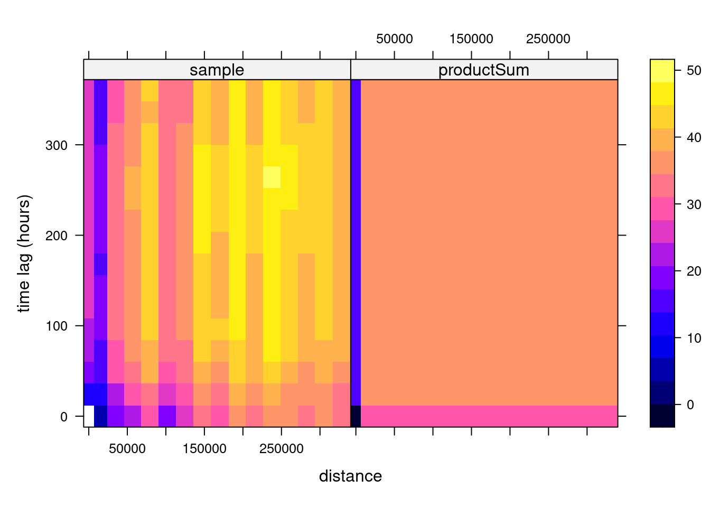
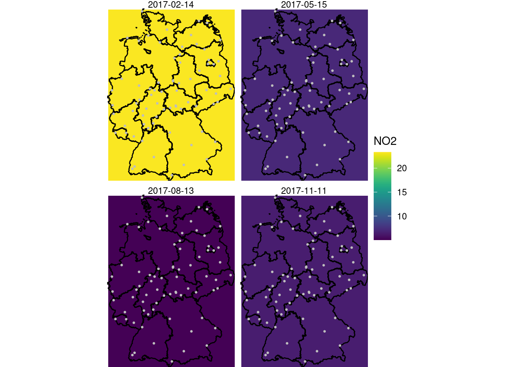
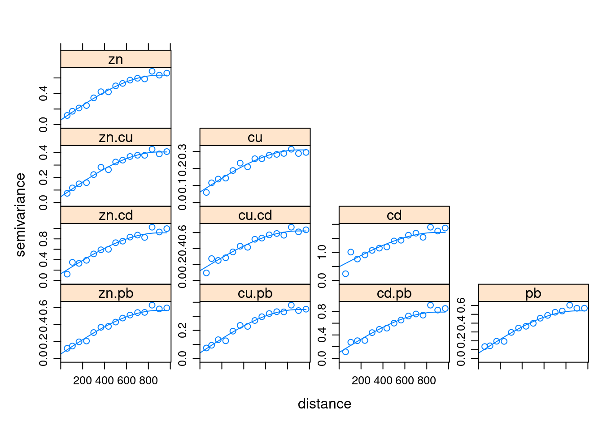
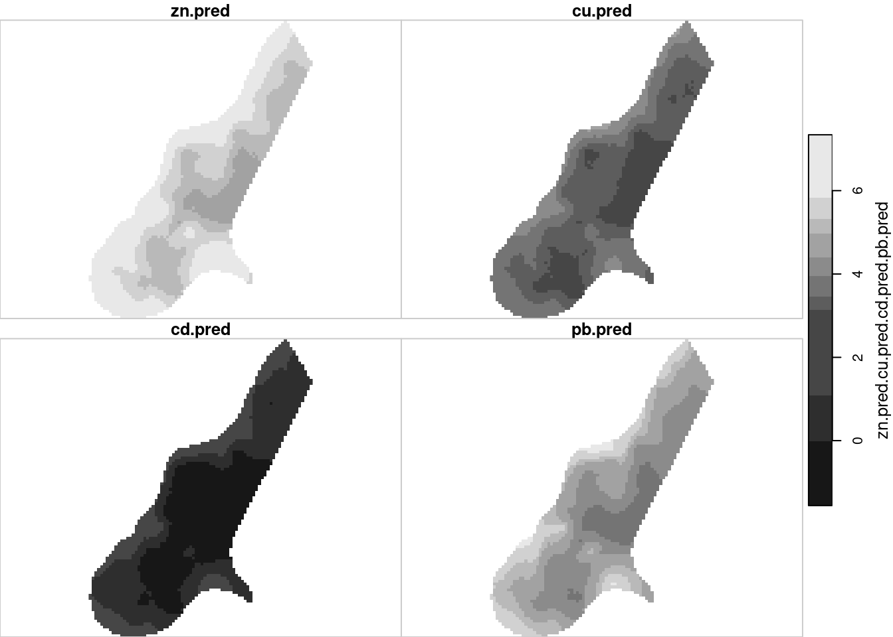
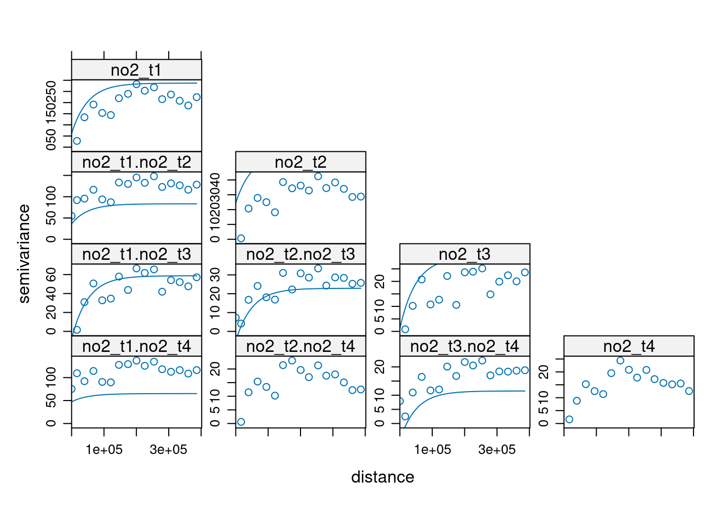
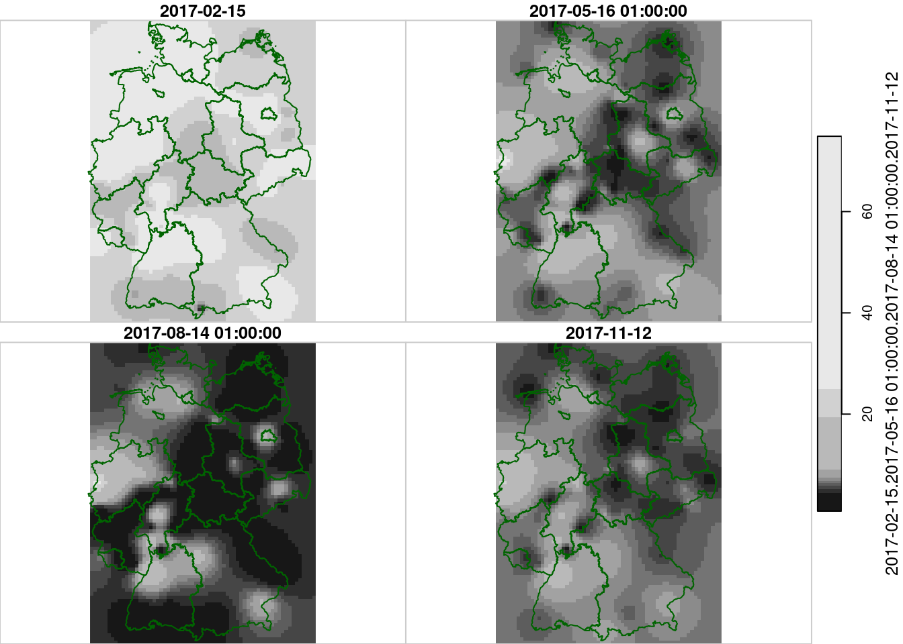
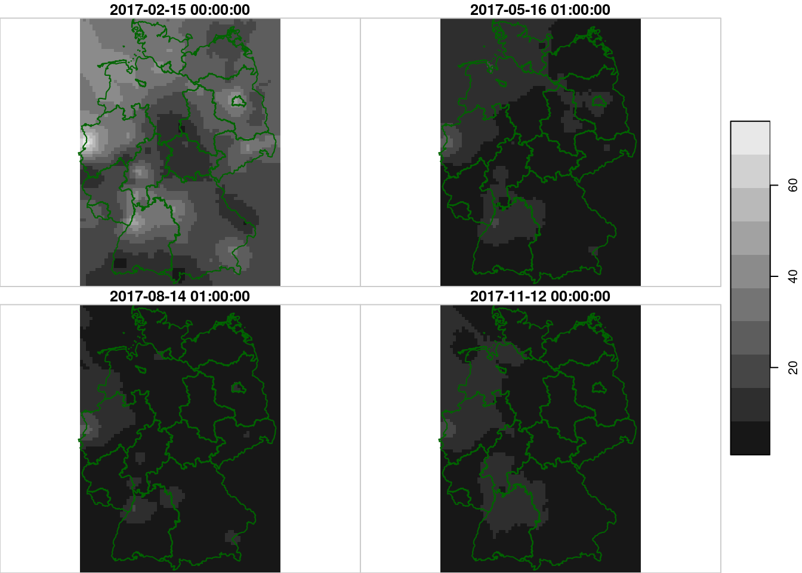
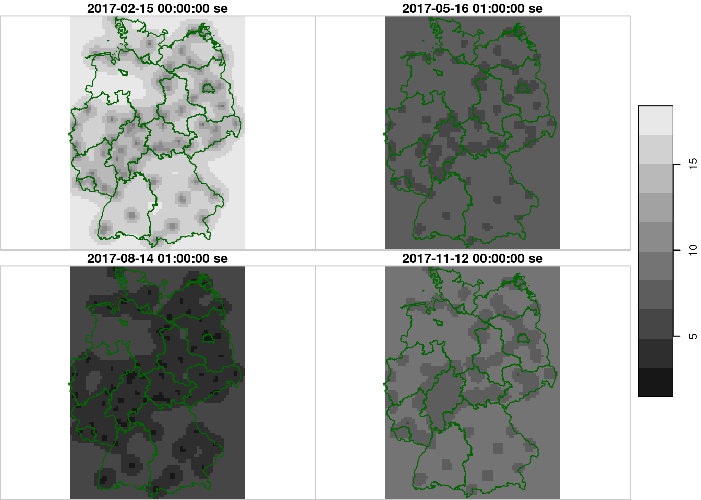

load("ch13.RData")
sel = apply(aq, 2, function(x) mean(is.na(x)) < 0.25)
1 - mean(sel)
# [1] 0.0170316313 Multivariate and Spatiotemporal Geostatistics
13.1 ex 13.1
Which fraction of the stations is removed in section @ref(preparing) when the criterion applied that a station must be 75% complete?
meaning, 1.7 percent of the stations were removed in this step. We can use mean becasue the logical values TRUE and FALSE map to 1 and 0, respectively, when treated as numeric.
13.2 ex 13.2
From the hourly time series in no2.st, compute daily mean concentrations using aggregate, and compute the spatiotemporal variogram of this. How does it compare to the variogram of hourly values?
library(stars)
# Loading required package: abind
# Loading required package: sf
# Linking to GEOS 3.10.2, GDAL 3.4.3, PROJ 8.2.1; sf_use_s2() is TRUE
no2.d = aggregate(no2.st, "1 day", mean, na.rm = TRUE)
library(gstat)
v.d = variogramST(NO2~1, no2.d)13.3 ex 13.3
Carry out a spatiotemporal interpolation for daily mean values for the days corresponding to those shown in @ref(fig:plotspatiotemporalpredictions), and compare the results.
prodSumModel <- vgmST("productSum",
space = vgm(50, "Exp", 200, 0),
time = vgm(20, "Sph", 40, 0),
k = 2)
StAni = estiStAni(v.d, c(0,20000))
(fitProdSumModel <- fit.StVariogram(v.d, prodSumModel, fit.method = 7,
stAni = StAni, method = "L-BFGS-B",
control = list(parscale = c(1,10,1,1,0.1,1,10)),
lower = rep(0.0001, 7)))
# space component:
# model psill range
# 1 Nug 0.00010 0
# 2 Exp 21.36956 200
# time component:
# model psill range
# 1 Nug 15.447236 0.00000
# 2 Sph 2.237385 40.00188
# k: 1e-04
plot(v.d, fitProdSumModel, wireframe = FALSE, all = TRUE, scales = list(arrows=FALSE), zlim = c(0,50))
if (file.exists("new_int2.RData")) {
load("new_int2.RData")
}new_int2 <- krigeST(NO2~1, data = no2.d["NO2"], newdata = grd.st,
nmax = 100, stAni = StAni, modelList = fitProdSumModel,
progress = FALSE)
names(new_int2)[2] = "NO2"save(list = "new_int2", file = "new_int2.RData")library(viridis)
# Loading required package: viridisLite
library(viridisLite)
library(ggplot2)
g <- ggplot() + coord_equal() +
scale_fill_viridis() +
theme_void() +
scale_x_discrete(expand=c(0,0)) +
scale_y_discrete(expand=c(0,0))
g + geom_stars(data = new_int2, aes(fill = NO2, x = x, y = y)) +
facet_wrap(~as.Date(time)) +
geom_sf(data = st_cast(de, "MULTILINESTRING")) +
geom_sf(data = no2.sf, col = 'grey', cex = .5) +
coord_sf(lims_method = "geometry_bbox")
# Coordinate system already present. Adding new coordinate system,
# which will replace the existing one.
13.4 ex 13.4
Following the example in the demo scripts pointed at in section 13.2, carry out a cokriging on the daily mean station data for the four days shown in figure 13.5. What are the differences of this approach to spatiotemporal kriging?
Here is the demo script in sf/stars style:
library(stars)
library(gstat)
data(meuse, package = "sp")
meuse = st_as_sf(meuse, coords = c("x", "y"))
data(meuse.grid, package = "sp")
meuse.grid = st_as_stars(meuse.grid)
# cokriging of the four heavy metal variables
gstat(id="zn", formula=log(zinc)~1, data=meuse, nmax = 10) |>
gstat("cu", log(copper)~1, meuse, nmax = 10) |>
gstat("cd", log(cadmium)~1, meuse, nmax = 10) |>
gstat("pb", log(lead)~1, meuse, nmax = 10) |>
gstat(model=vgm(1, "Sph", 900, 1), fill.all = TRUE) -> meuse.g
x <- variogram(meuse.g, cutoff=1000)
meuse.fit = fit.lmc(x, meuse.g)
plot(x, model = meuse.fit)
z <- predict(meuse.fit, newdata = meuse.grid)
# Linear Model of Coregionalization found. Good.
# [using ordinary cokriging]
z[c(1,3,5,7)] |> merge() |> plot()
z[c(2,4,6,9)] |> setNames(paste0(c("zn", "cu", "pb", "cd"), ": se")) |>
merge() |> sqrt() |> plot()
Now for the NO2 data:
time(no2.d) -> days
time(grd.st) -> times
which(days %in% times) -> sel
no2.dr = aperm(no2.d, 2:1)
no2.dr[,, sel[1] ] |> adrop() |> st_as_sf() |> na.omit() -> no2_t1
no2.dr[,, sel[2] ] |> adrop() |> st_as_sf() |> na.omit() -> no2_t2
no2.dr[,, sel[3] ] |> adrop() |> st_as_sf() |> na.omit() -> no2_t3
no2.dr[,, sel[4] ] |> adrop() |> st_as_sf() |> na.omit() -> no2_t4
# cokriging of the four days:
gstat(id="no2_t1", formula=NO2~1, data=no2_t1, nmax = 10) |>
gstat("no2_t2", NO2~1, no2_t2, nmax = 10) |>
gstat("no2_t3", NO2~1, no2_t3, nmax = 10) |>
gstat("no2_t4", NO2~1, no2_t4, nmax = 10) |>
gstat(model=vgm(1, "Exp", 50000, 1), fill.all = TRUE) -> no2.g
x <- variogram(no2.g, cutoff=400000)
no2.fit = fit.lmc(x[x$dist > 0,], no2.g, correct.diagonal = 1.01)
plot(x, model = no2.fit) # ???
z <- predict(no2.fit, newdata = adrop(grd.st[,,,1]))
# Linear Model of Coregionalization found. Good.
# [using ordinary cokriging]
de1 = st_cast(st_geometry(de), "MULTILINESTRING")
hook = function() { plot(de1, add = TRUE, col = 'darkgreen') }
z[c(1,3,5,7)] |> setNames(times) |> merge() |> plot(hook=hook)
z[c(1,3,5,7)] |> setNames(times) |> merge() |> plot(hook=hook, breaks = "equal")
z[c(2,4,6,9)] |> setNames(paste(times, "se")) |>
merge() |> sqrt() |> plot(hook=hook, breaks = "equal")